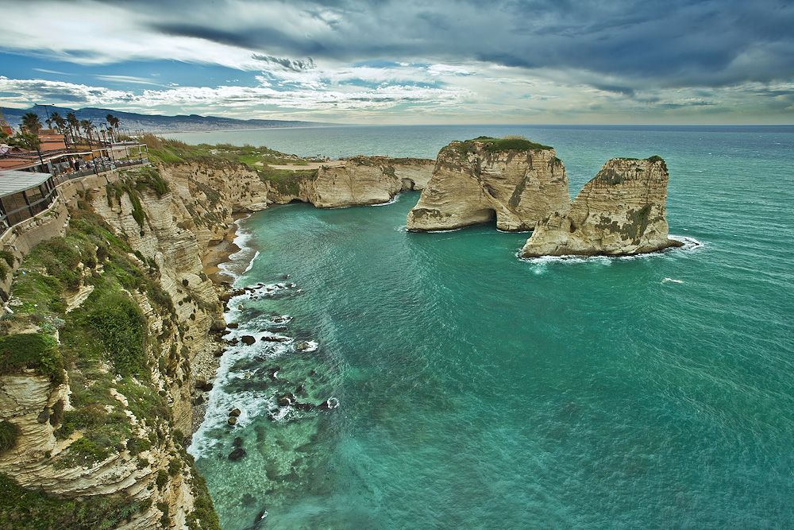
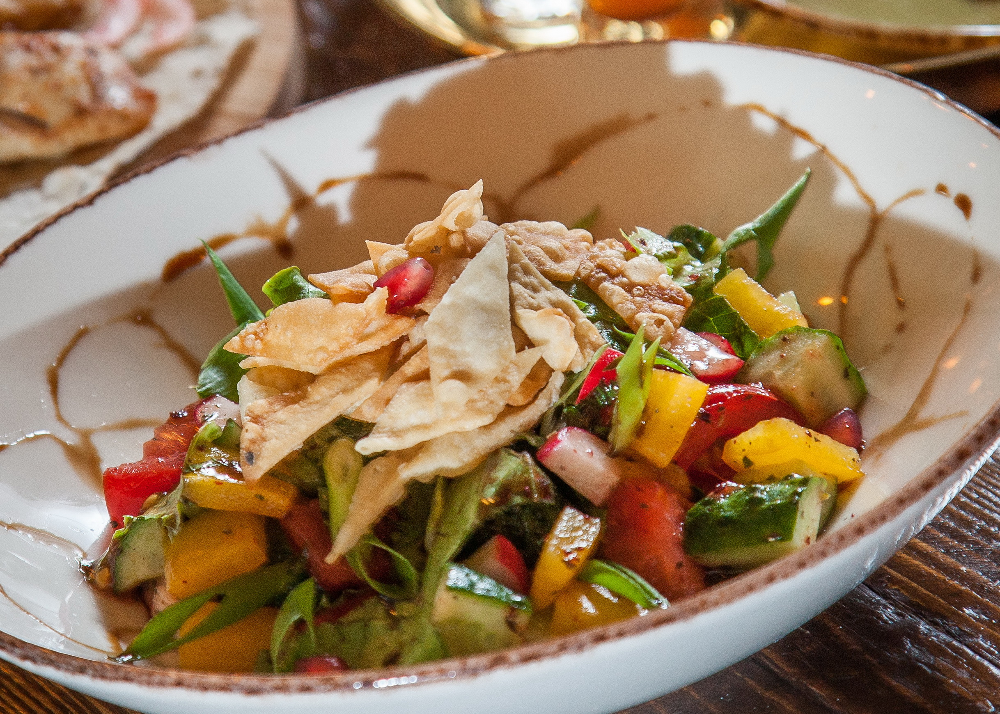
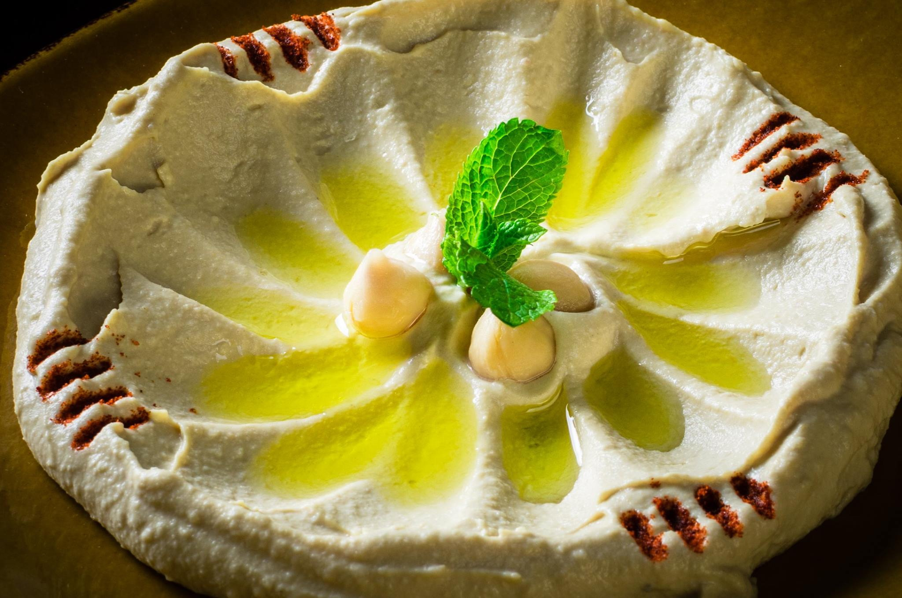
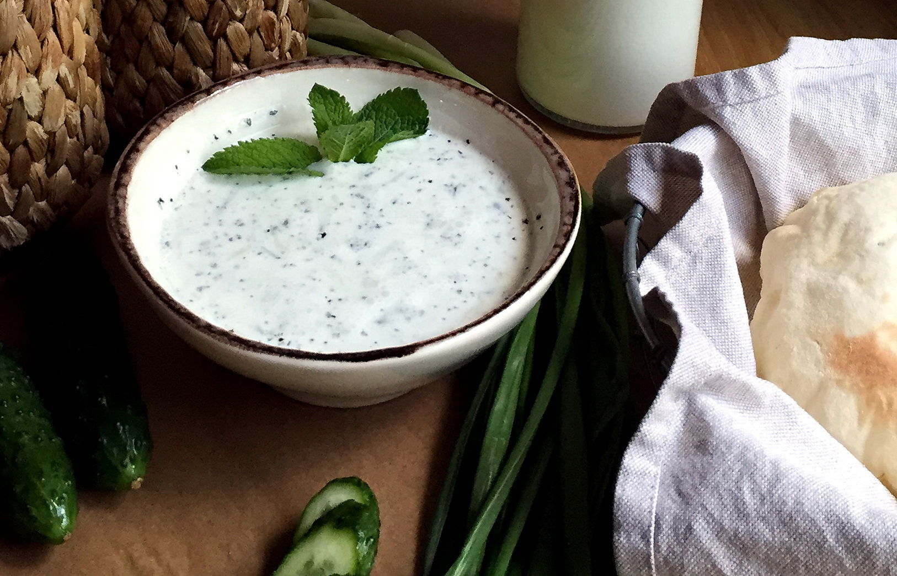
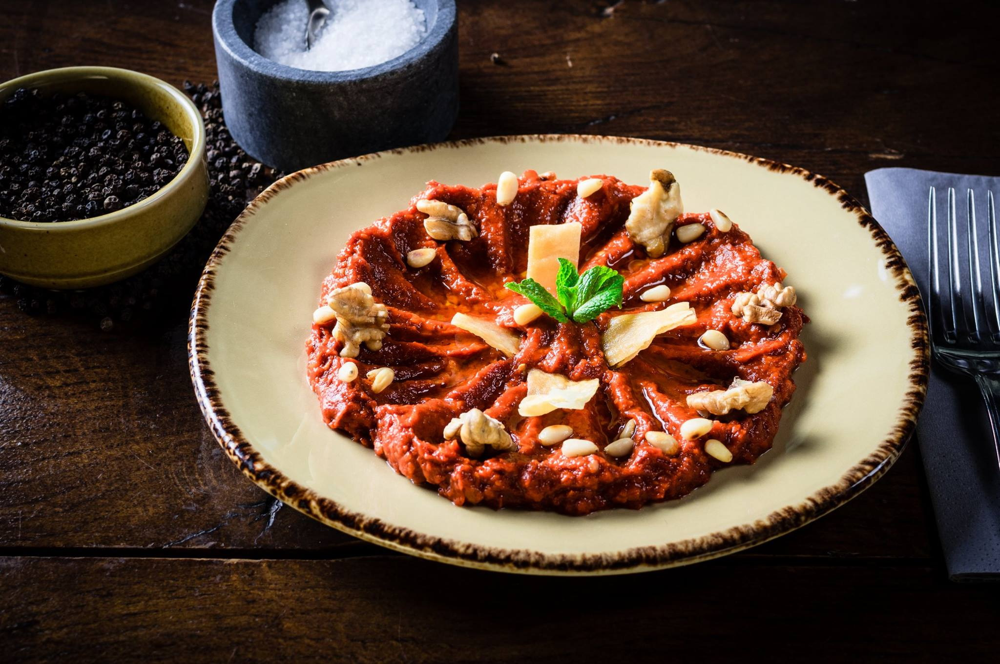
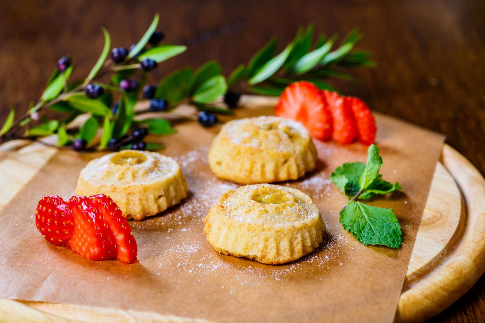
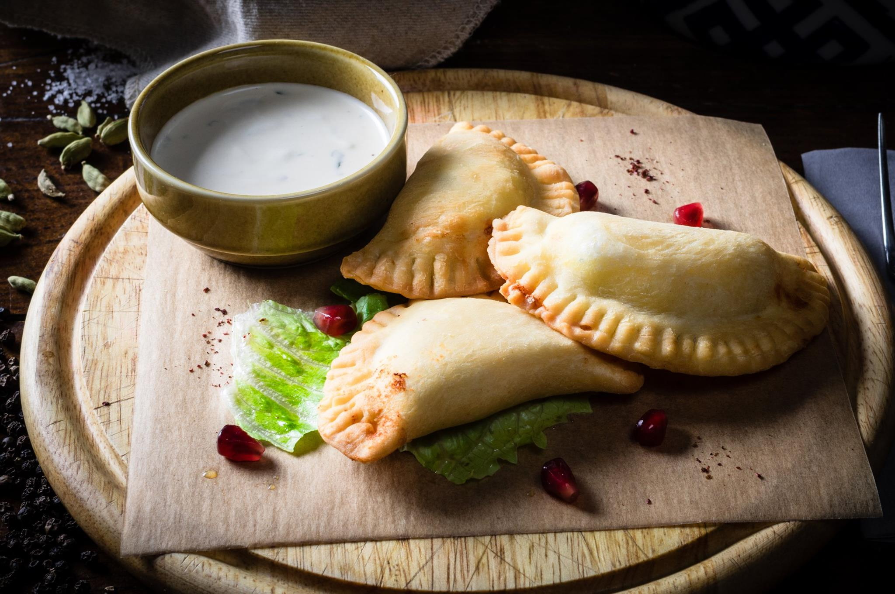
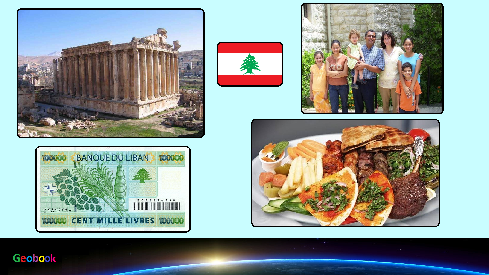

×

Lebanon
Традиционная еда
Фаттуш — очень яркий и красочный салат. Сочетание ингредиентов в нем довольно типичное, что делает его похожим на некоторые балканские, восточно-средиземноморские и арабские блюда. Любителям итальянской кухни он, скорее всего, напомнит хлебный салат панцанелла.

Хумус (или хоммус) — На Ближнем Востоке существует великое множество рецептов хумуса, но его основу всегда составляет нут. Вкус закуски напрямую зависит от качества гороха. До изобретения блендеров нут перетирали вручную. Считается, что не нужно превращать горох в однородную, пастообразную массу. Гораздо вкуснее, когда в нем попадаются маленькие крупинки — это классический домашний рецепт.

Лабан — это не только суп, но и прекрасная приправа к другим блюдам. Он великолепно сочетается со знаменитым салатом табуле. Им поливают жареное мясо, рыбу, свежие овощи и даже обычный хлеб».

Кибби — общее название для блюд, в состав которых входит свежий бараний или говяжий фарш и булгур — крупа из обработанной кипятком, высушенной и раздробленной пшеницы. В разных вариантах эти кушанья широко распространены в странах Ближнего Востока. А ливанцы-эмигранты даже умудрились завезти их в Южную Америку.

Мамуль — это рассыпчатое ароматное печенье, которое ливанцы готовят по случаю какого-нибудь праздника. Его можно приобрести и в магазине, но у каждой домохозяйки обязательно есть свой правильный рецепт, доставшийся по наследству.

Самбусики — Вообще-то эти маленькие арабские пирожки называются самбусе́ки, но они такие миниатюрные и милые, что в России их переименовали в самбу́сики. Они очень часто встречаются в Ливане, Сирии, Иордании, Израиле, однако и в других странах у них есть дальние родственники — например, самоса в Индии или эмпанада в Испании.

____
